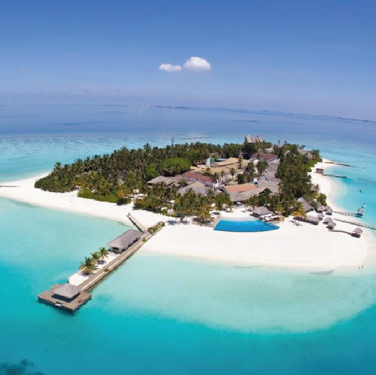
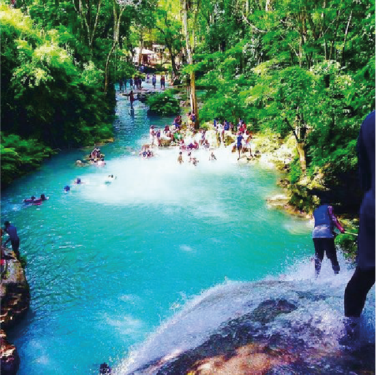
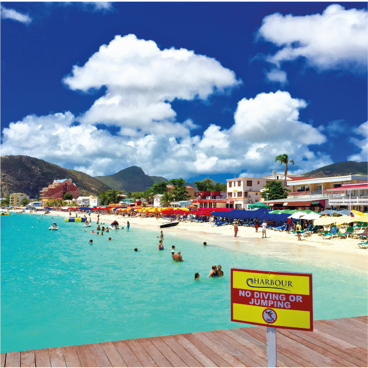

LOS ROQUES
Es un archipiélago de Venezuela, situado en el Mar Caribe, fue declarado parque nacional en 1972, lugar de ensueño para los amantes del buceo, del windsurf y de la pesca, hay una gran variedad de posadas que van desde las más básicas y hasta las más elegantes.

OCHO RIOS
A una hora y media en coche de Montego Bay, en la costa norte de Jamaica, siempre llenas de gente, cuando llega un crucero a la ciudad. Como se trata de una de las zonas mas turísticas de la isla, es muy fácil encontrar diversas actividades para disfrutar con la familia.

ST MARTEEN
Es la isla más pequeña del mundo compartida por dos naciones Holanda y Francia. Tiene paradisíacas playas, aguas cristalinas y arenas de color blanco. Este territorio de ultramar de los dos países europeos está repleto de boutiques, hoteles de cinco estrellas y casinos.
